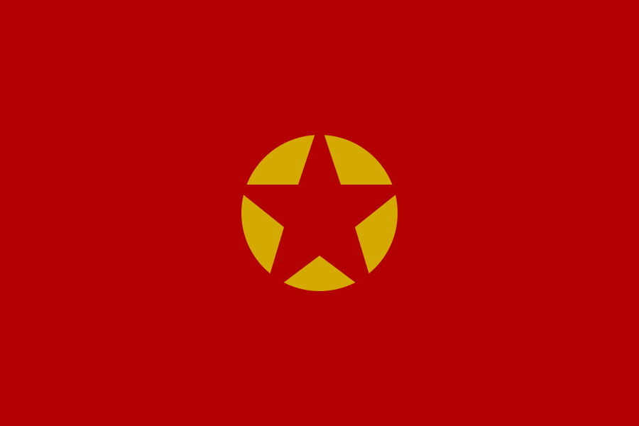

“Ni oportunismo ni sectarismo: por la independencia proletaria.”
El Partido Comunista Vuenaguista (PCV) fue una organización política ficticia fundada en 2025 y disuelta en 2026. Surgió en una reunión celebrada en Ituzaingó entre Ignacio Pared, Lázaro Ríos, Juan González, Sofía Sirio Pose y David Caffera.
Durante su fundación se aprobaron una declaración de principios, un programa común y una serie de reclamos inmediatos. Ignacio Pared fue elegido Secretario General, mientras que Lázaro Ríos asumió tareas teóricas y periodísticas.
Desde sus primeros días aparecieron diferencias ideológicas entre el leninismo pragmático defendido por Pared y las posiciones bordiguistas de Ríos. A pesar de los intentos conciliadores, las disputas crecieron rápidamente.
Artículo atribuido a Edelmiro (Lázaro Ríos). El texto criticaba la subordinación de los intereses obreros a proyectos nacionales amplios y defendía un programa invariante de clase.
Debate entre centralismo democrático y centralismo orgánico. Este fue uno de los principales ejes de discusión dentro del partido.
El PCV rechazó oficialmente la política de frentes populares y reivindicó una posición antiestalinista desde su fundación.
Las diferencias ideológicas se profundizaron durante discusiones internas. Posteriormente se produjeron expulsiones que dejaron al Comité Central prácticamente sin integrantes. Tras nuevas deliberaciones, los miembros restantes acordaron la disolución del partido en 2026.
Formulario histórico recreado con fines archivísticos.